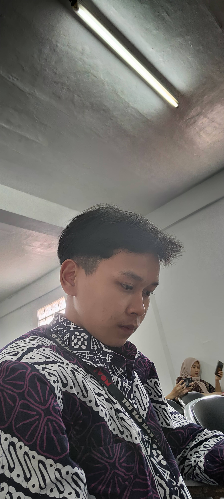
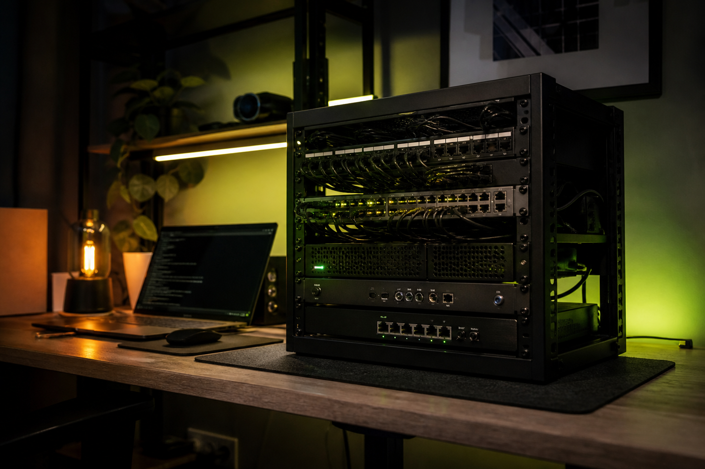
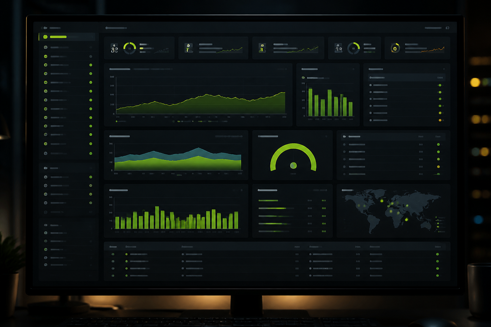
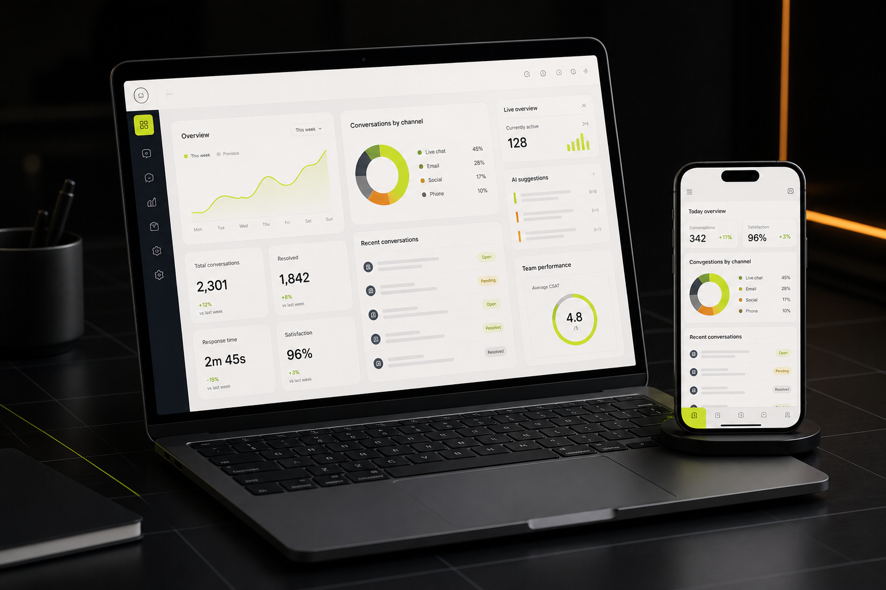

Software Engineering
Aplikasi web modern, API, integrasi sistem, dan database.
AMN / DIGITAL OPERATOR / JKT—ID
Saya membangun aplikasi yang andal, mengotomasi proses deployment, dan memastikan infrastruktur server tetap aman, stabil, serta siap berkembang.

ENGINEER$ deploy portfolio
✓ production is liveTentang saya
Saya mengembangkan solusi digital dari antarmuka pengguna hingga layanan backend dan lingkungan produksinya. Bagi saya, produk yang baik bukan hanya terlihat rapi—tetapi juga cepat, mudah dirawat, dan dapat diandalkan.
Saat ini saya merangkap sebagai Software Engineer, DevOps, dan Server Specialist: menangani pengembangan aplikasi, otomasi CI/CD, deployment, konfigurasi server, serta pemantauan layanan.
Aplikasi web modern, API, integrasi sistem, dan database.
Pipeline otomatis, deployment konsisten, dan workflow delivery.
Konfigurasi, observabilitas, troubleshooting, dan reliability.
Pengalaman terkini
PT Indonesia Comnets Plus (PLN Icon Plus) · Jakarta
Mengembangkan sistem aplikasi pelayanan pelanggan PLN sekaligus mendukung delivery dan operasional layanan pada lingkungan server.
Karya pilihan
Visualisasi proyek yang menggambarkan fokus saya pada infrastructure, observability, dan pengembangan aplikasi web.

Infrastructure ↗Concept visualLingkungan eksperimental untuk mempelajari networking, virtualisasi, deployment, dan operasional layanan secara langsung.
Linux · Network · Server

Observability ↗Concept visualKonsep pemantauan health, resource, log, dan availability untuk mendeteksi masalah sebelum berdampak ke pengguna.
Metrics · Logs · Uptime

Web App ↗Concept visualVisualisasi aplikasi responsif untuk merangkum percakapan, performa tim, dan insight pelayanan dalam satu tampilan.
Frontend · Backend · API
Ceritakan kebutuhannya. Saya siap berdiskusi tentang pengembangan produk, otomasi deployment, dan reliability sistem.
Chat via WhatsApp ↗